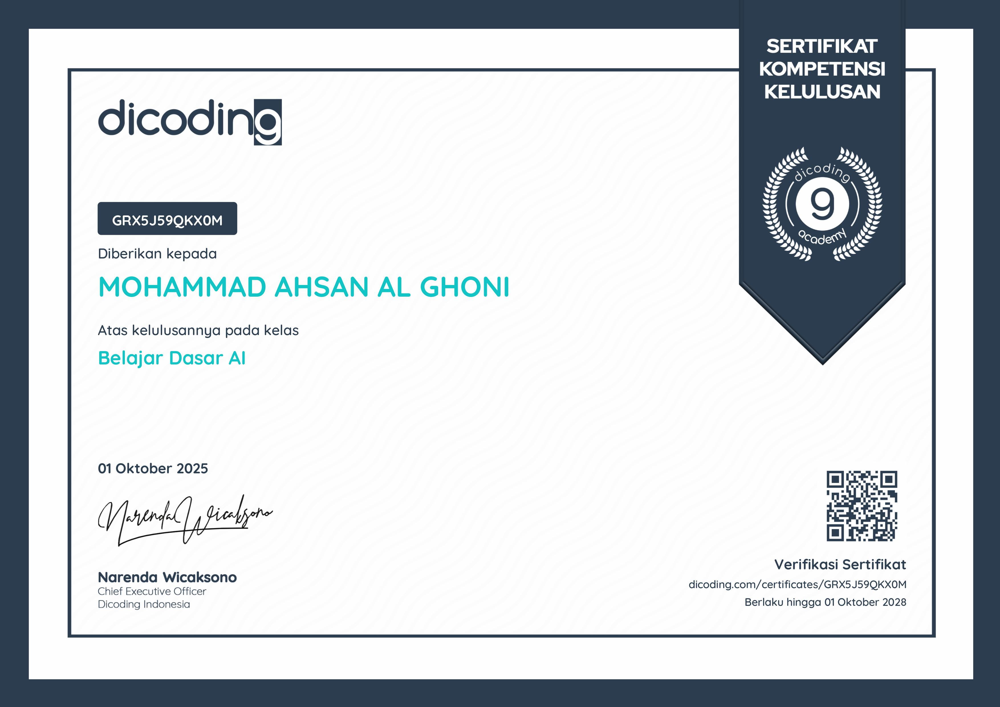
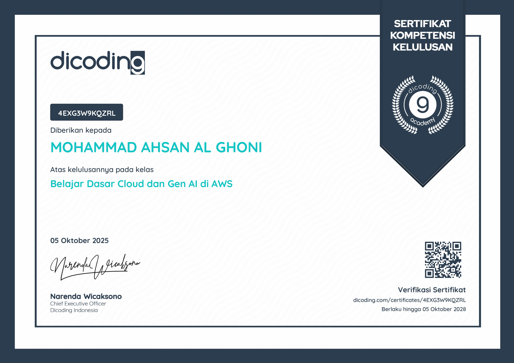
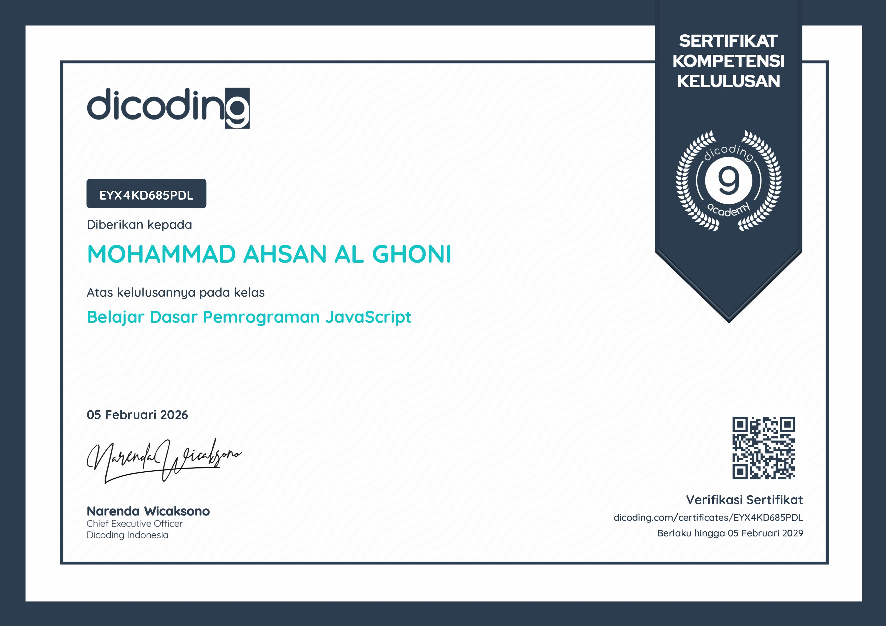
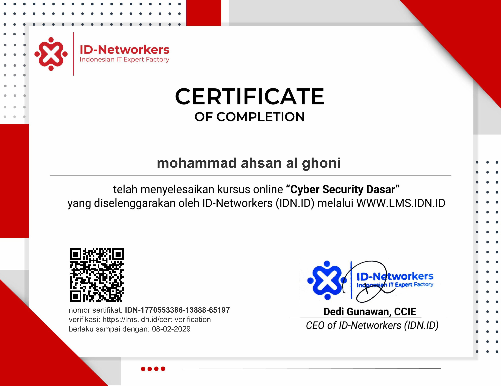
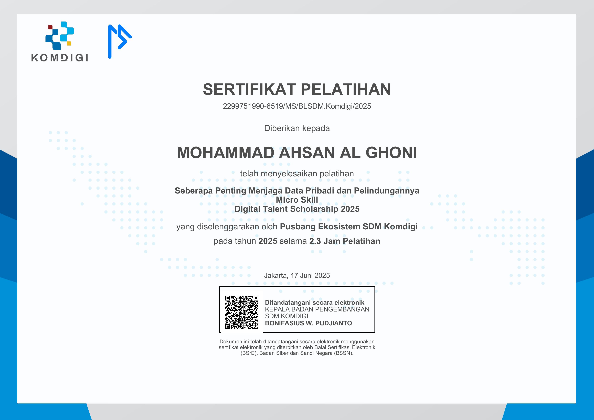
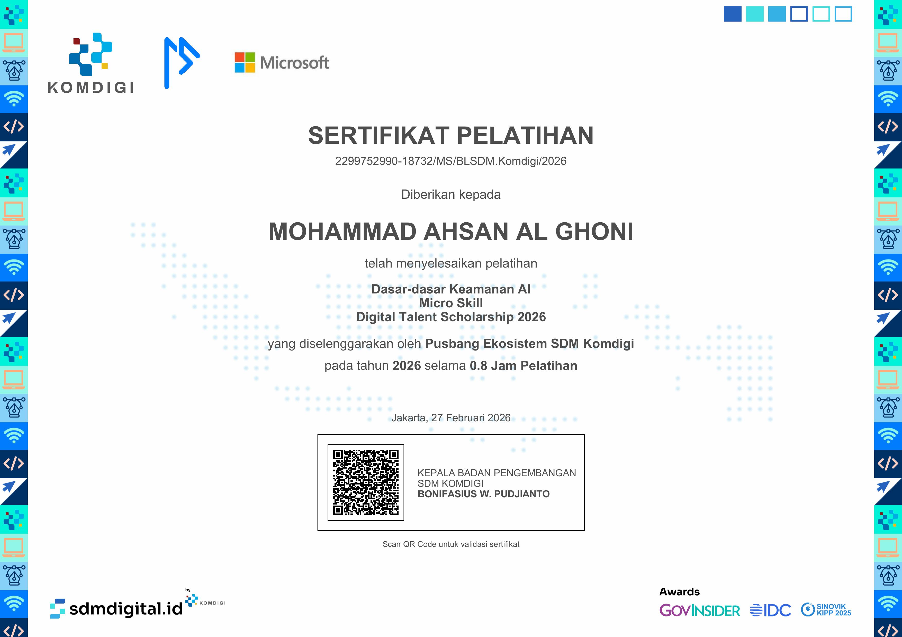
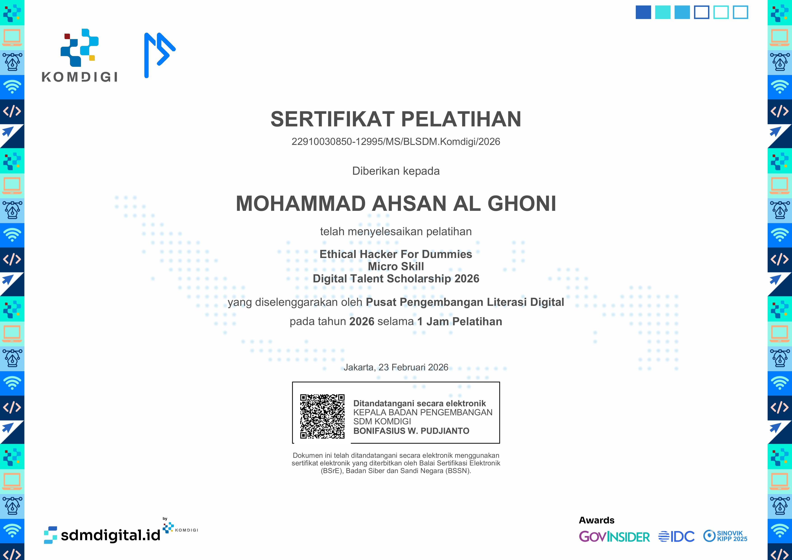
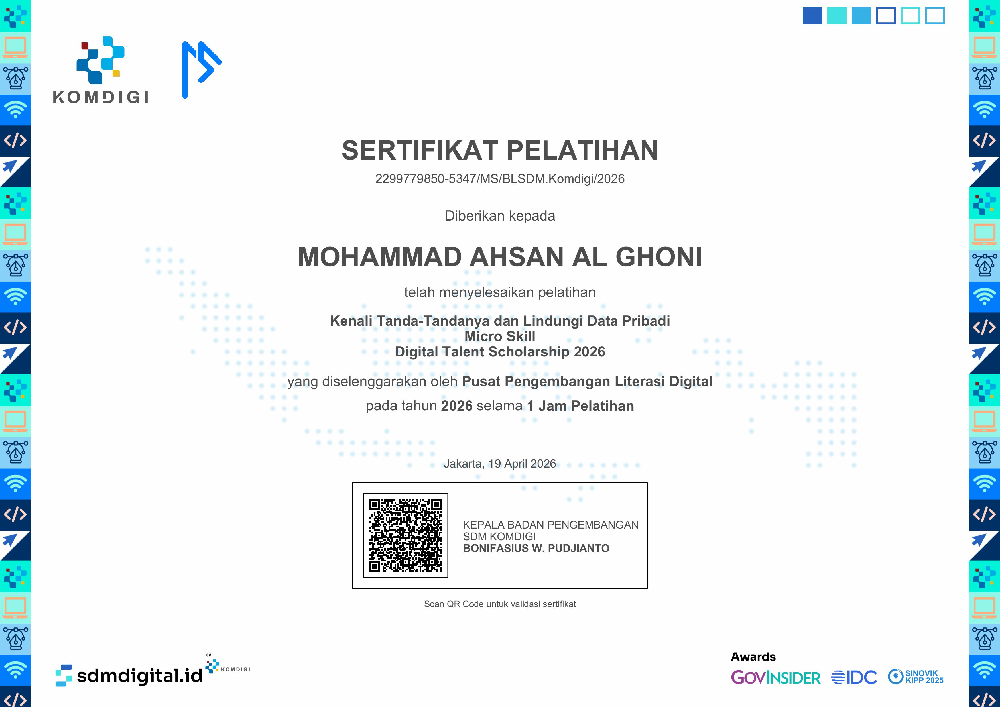
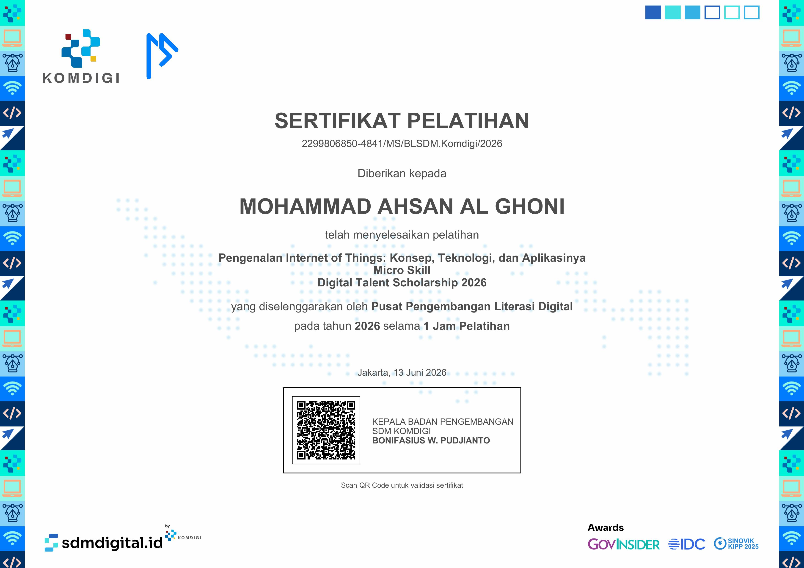

Belajar Dasar AIDicoding
Sertifikat ini bukan sekadar pajangan. Materi dari kelas AI, JavaScript, cloud, Linux, networking, security, dan IoT saya pakai langsung ketika membangun project publik seperti Catur Online, Al-Quran Digital, dan WotAnime.











Dari belajar ke produk
Bagian paling penting bagi saya adalah menerapkan materi ke project nyata. Materi AI, JavaScript, cloud, networking, dan security saya pakai langsung di setiap project publik. Hubungi saya untuk kolaborasi atau diskusi teknis.